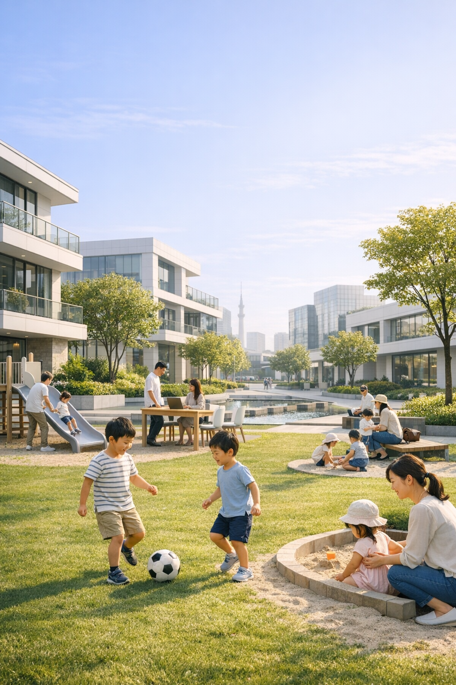

Read
Read
Urban Insight Magazine
都市を読み解く。
未来をデザインする。
Future City Journal は、都市開発・建築・スマートシティをテーマに、 未来をつくる人々の思想とビジョンを深く掘り下げるインタビューメディアです。

FEATURED
注目の特集インタビュー

「未来の暮らしをつくる」 新規都市開発プロジェクトの舞台裏
地方都市で進む大規模都市開発。その中心にいるのが、 ○○都市開発株式会社・開発本部長 佐藤健一 氏。 都市の未来をどう描き、どのように実現しようとしているのか── その思想と戦略に迫る。
Read InterviewCOLUMNS
都市を読み解く視点
都市と光のデザイン
夜の都市景観を形づくる“光”のデザイン。安全性と美しさを両立する最新のアプローチとは。
歩行者中心の都市計画
世界の都市が採用する「ウォーカブルシティ」の思想と、日本での可能性を探る。
未来の働き方と都市構造
リモートワーク時代における都市の役割はどう変わるのか。働き方と都市の関係を再考する。
ABOUT
Future City Journal とは
都市開発・建築・スマートシティをテーマに、 未来をつくる人々の思想とビジョンを深く掘り下げるインタビューメディア。 都市を「読む」ための知的な視点を提供します。
テーマ
- ・都市開発 / Urban Development
- ・建築デザイン / Architecture
- ・スマートシティ / Smart City
- ・公共空間 / Public Space
- ・未来の暮らし / Future Living
Contact
取材依頼・掲載相談などはこちらから
MAIL：info@future-journal.jp
TEL：00-0000-0000（平日